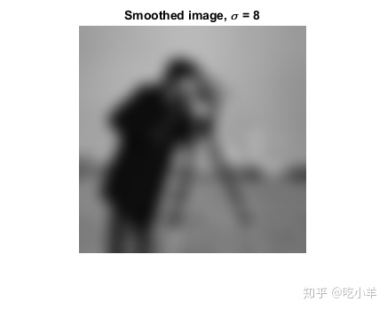
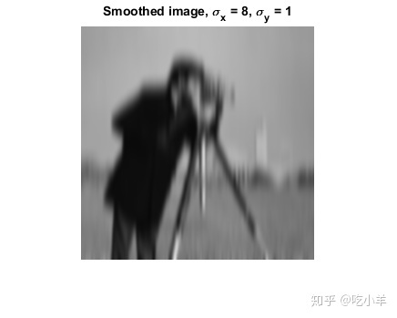
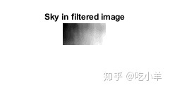

Home
本示例说明了如何使用imgaussfilt来对图像应用不同的高斯平滑滤波器。高斯平滑滤波器通常用于降低噪声。
将图像读入工作区。
I = imread('cameraman.tif');
使用各向同性的高斯平滑核增加标准偏差来过滤图像。高斯滤波器通常是各向同性的，也就是说，它们在两个维度上具有相同的标准偏差。通过为sigma指定标量值，可以通过各向同性的高斯滤波器对图像进行滤波。
Iblur1 = imgaussfilt(I,2); Iblur2 = imgaussfilt(I,4); Iblur3 = imgaussfilt(I,8);
显示原始图像和所有过滤的图像。
figure
imshow(I)
title('Original image')
figure
imshow(Iblur1)
title('Smoothed image, \sigma = 2')
figure
imshow(Iblur2)
title('Smoothed image, \sigma = 4')
figure
imshow(Iblur3)
title('Smoothed image, \sigma = 8')

用各向异性高斯平滑核滤波图像。imgaussfilt允许高斯核沿着行和列的尺寸具有不同的标准偏差。这些被称为轴对准各向异性高斯滤波器。使用各向异性过滤器时，要为sigma指定2元素向量。
IblurX1 = imgaussfilt(I,[4 1]); IblurX2 = imgaussfilt(I,[8 1]); IblurY1 = imgaussfilt(I,[1 4]); IblurY2 = imgaussfilt(I,[1 8]);
显示滤波的图像。
figure
imshow(IblurX1)
title('Smoothed image, \sigma_x = 4, \sigma_y = 1')
figure
imshow(IblurX2)
title('Smoothed image, \sigma_x = 8, \sigma_y = 1')

figure
imshow(IblurY1)
title('Smoothed image, \sigma_x = 1, \sigma_y = 4')
figure
imshow(IblurY2)
title('Smoothed image, \sigma_x = 1, \sigma_y = 8')
抑制原始图像中的天空区域中可见的水平带。各向异性高斯滤镜可以抑制图像中的水平或垂直特征。提取图像的天空区域的一部分，并使用沿X轴（列增加的方向）具有较高标准偏差的高斯滤波器。
I_sky = imadjust(I(20:50,10:70)); IblurX1_sky = imadjust(IblurX1(20:50,10:70));
显示原始天空图块以及滤波版本的图块。
figure
imshow(I_sky), title('Sky in original image')
figure
imshow(IblurX1_sky), title('Sky in filtered image')

======================================================================
我的测试结果及程序
下面是我测试的代码：

注：本文根据MATLAB官网内容修改而成。